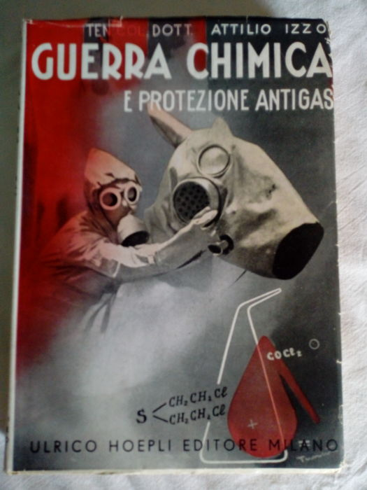
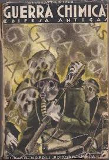
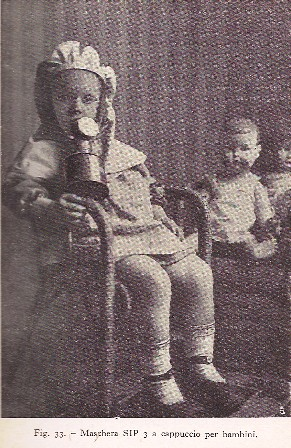

Quando si parla di gas, e per una fortuita combinazione viene associata la parola "regime" (qui intendo il nostro Ventennio) la mia fantasia visualizza immediatamente non una eterea sostanza aeriforme ma un paio di copertine di altrettanti libri d'epoca che riposano sullo scaffale che ho di fronte. Eccole:


I volumi in oggetto, degli anni '30, sono opera del Dott. Attilio Izzo, allora insegnante di Cultura militare presso l'Università di Pavia.
(Per la cronaca l'autore è famoso, fra l'altro, per un fondamentale e pregevole volumetto sulla pirotecnia, insostituibile opera per i cultori a vario titolo dei fuochi artificiali).
Questo mese, nel suo blog Arte e salute Emanuela Zerbinatti ospita il 28° Carnevale della Chimica; visto che si parla di gas, posso collegarmi a qualcosa di assai meno gioioso di un carnevale? Ci provo.
Come si deduce dalle immagini, a parte i facili moralismi e le considerazioni politiche che non voglio nemmeno sfiorare, intendo parlare di sostanze chimiche, per usare un eufemismo, molto sgradevoli: i "gas" per uso bellico.
Con la premessa che quanto segue è per fare il punto della situazione esclusivamente dal punto di vista chimico e storico; ne parlo con tono leggero, senza nessun ammiccamento verso questo lato aberrante dell'uso della scienza.
Mai come questa volta si conferma l'universale principio secondo cui non è l'oggetto in sè stesso ad essere buono o cattivo, ma colui che lo usa.
°°°°°
Il Regime fascista era molto sensibile alla divulgazione, scientifica o puramente informativa sulla protezione e l'uso degli aggressivi chimici; i libri di cui si vedono le copertine non sono particolarmente rari e la loro tiratura fu copiosa da parte di quella eccezionale casa editrice scientifica che fu l'Hoepli di Milano, con altrettanto buona diffusione.
Poichè il Governo strizzava l'occhio (direi anche tutti e due...) alla preparazione e al mantenimento di una macchina bellica efficiente, aveva tutto l'interesse a preparare la popolazione ad essere "pronta a tutto"; ci si doveva allenare anche a strane idee, come quella di starsene rintanati in un rifugio sigillato a girare la manovella di una ventola per ricambiare l'aria filtrata... visto che fuori la stessa era resa irrespirabile dai gas tossici lanciati da un indefinito (ma non tanto) nemico.
Si cercava insomma per quanto possibile di diffondere nel Paese, e l'Autore lo sottolinea più volte, una "coscienza chimica" di difesa. (Anche di attacco se necessario, ma allora a girare la manovella sarebbero stati gli altri...).
Tralasciando qualche occasionale evento precedente e di nessuna rilevanza storica, l'impiego bellico dei gas apparve sulle scene all'inizio nella Grande Guerra.
Sembra che la primissima sostanza usata sia stata il bromoacetato di etile CH2Br-CH2-COO-CH2-CH3, un lacrimogeno molto potente, già nell'agosto del 1914.
E' certo comunque che nel novembre di quell'anno i tedeschi (e non potevano essere che loro, vista l'industria chimica che si ritrovavano) lanciarono sui francesi una montagna di shrapnels carichi di clorosolfonato di o-dianisidina (tralascio la formula), sostanza tossica e irritante.
Si impiegarono all'inizio delle ostilità principalmente sostanze lacrimogene, dall'effetto immediato ma non letale: cloroacetone CH2Cl-CO-CH3, bromuro di benzile C6H5-CH2-Br e bromuro di xilile, assieme agli esteri etilici dell'acido alogeno-acetico (cloro-bromo-iodo acetato di etile X-CH2-COO-CH2-CH3)
[A proposito di lacrimogeni: in occasione di qualche esperimento mi è capitato personalmente di provare fortuitamente la potenza di qualcuna di queste sostanze... e assicuro che da quel momento le ho eliminate seduta stante ed irreversibilmente dall'elenco dei miei potenziali reagenti...
Ma c'è di peggio: il titolo di lacrimogeno più potente credo spetti al cianuro di bromobenzile C6H5-CH(CN)Br, che ha un limite di irritazione di un decimo di milligrammo per metro cubo d'aria!]
Il primo vero dramma della guerra chimica fu quando a Ypres nell'aprile del '15 si cominciò ad usare un gas vero e proprio, il cloro.
Fu un'ecatombe annunziata, dato che il comando francese, pur a conoscenza dei preparativi tedeschi per un'offensiva in tal senso, non diede alcuna importanza alle informazioni che aveva.
In maggio fu provato su quel fronte anche il bromo, che non ebbe seguito soprattutto per il costo, mentre il cloro avrebbe dimostrato lungo tutta la guerra la sua nefasta efficacia.
Altra sostanza sperimentata senza seguito in quel periodo fu addirittura il dimetilsolfato (CH3-O)2-SO2, importante reagente metilante estremamente tossico, ma forse più utile in un laboratorio che sul campo di battaglia.
Nel settembre del 1915 i francesi ebbero un'idea: riempire i proiettili con il CSCl2, tiofosgene, brutta bestia pure questa, ma prontamente surclassata dal suo parente ossigenato e non solforato, il famigerato fosgene COCl2.
Il fosgene fu un aggressivo fondamentale per tutti gli eserciti, ed è estremamente infido perchè uccide anche in modo imprevedibile e in ritardo, quando magari l'effetto soffocante è passato e sembra di avercela fatta...
Altri esperimenti furono l'aldeide acrilica (acroleina) CH2=CH-CHO, e il triclorometilcloroformiato (difosgene) Cl-COO-CCl3, irritante e lacrimogena la prima, soffocante e molto più cattivo il secondo.
Nel luglio del '16 i francesi provarono la vincennite, ovvero il classico re dei veleni, HCN, l'acido cianidrico.
Il quale poverino è sì micidiale e velenosissimo, ma manca di una delle proprietà fondamentali per un aggressivo chimico da trincea: la persistenza.
E' troppo volatile e se ne vola via in un attimo, rendendone problematico l'impiego; nemmeno mescolandolo a più stabili cloruri di arsenico AsCl3 e stagno SnCl4 si risolse il problema e quindi non ebbe il successo sperato.
Idem per il comune idrogeno solforato H2S, che riporto solo come curiosità; un piccolissimo posticino nella prima W.W. ce l'ha pure lui, anche se sono sicuro che abbia fatto più puzza che danni reali.
Sul nostro fronte gli austriaci sprimentarono la campiellite, a base di bromuro di cianogeno BrCN, roba tosta anche questa.
C'è da ricordare che quasi tutti gli aggressivi avevano un nome convenzionale per ogni esercito, derivante o dalla località di primo impiego o un nome di fantasia. Il più famoso e conosciuto è l'Yprite (lo vedremo fra poco), che prende il nome dalla già citata e tristemente famosa località di Ypres.
Dopo la cloropicrina NO2-CCl3, abbastanza usata, venne il 1917, anno nel quale la terribile chimica di guerra (ma tutto è terribile in guerra, non saprei a chi o a che cosa assegnare la palma...) ebbe il massimo sviluppo.
E così in quella atroce estate del '17 arrivò la schifosa yprite, il bis-2-cloroetilsolfuro ClCH2-CH2-S-CH2-CH2Cl, la cui formula sta pure sulla copertina del libro, a significarne l'importanza che ebbe, da allora in poi.
Schifosa perchè l'yprite ha tutte le caratteristiche di un ottimo war-gas: è un potentissimo vescicante, lacrimogeno accecante, tossico, di lunga persistenza, agisce subdolamente in ritardo, penetra dappertutto, è facile produrla e costa pure poco.
E' stata usata da tutte le forze in campo, fin quasi ai giorni nostri... e non aggiungo altro.
Nel 17' arrivarono altre chimicamente "interessanti" sostanze: le arsine.
Le arsine sono derivati dell'idrogeno arsenicale (arsina AsH3), nella quale l'idrogeno è variamente sostituito da un alogeno e gruppi organici. E così abbiamo l'etildicloroarsina CH3-CH2-As-Cl2, la dimetilcianoarsina (CH3)2=As-CN, la fenildibromoarsina C6H5-AsBr2, la difenilfluoroarsina (C6H5)2-AsF, l'Adamsite o cloruro di fenarsazina (con tre anelli benzenici condensati più l'arsenico e il cloro).
In ogni caso la famiglia completa delle arsine è numerosa.
Tutte queste sostanze hanno in comune sia un potentissimo effetto starnutatorio e sia la capacità di poter essere disperse in forma di aerosol in particelle talmente piccole da non venir fermate dalle prime maschere antigas; il combattente era costretto a togliersi la maschera e così cadeva vittima di un altro gas letale (di solito fosgene) mescolato all'arsina.
Verso la fine della guerra anche gli americani diedero il loro contributo a questa folle chimica, inventando la lewisite, dall'odore di geranio e difficilissima da fermare.
E' la cloroetenildicloroarsina Cl-CH=CH-AsCl2.
Finalmente la prima guerra mondiale finì, e passò anche il Ventennio, che i gas di guerra tenne in notevole considerazione.
Ma non terminò la ricerca di sostanze sempre più micidiali, ad est come a ovest.
Sembra impossibile, ma da che mondo è mondo le guerre non hanno mai insegnato granchè.
La ricerca portò alla fine degli anni trenta a sostanze ben più micidiali, nelle quali l'elemento chiave è il fosforo... ma di queste e di altre sostanze più moderne e famose non voglio parlare ora.
Termino con una foto emblematica, presa dal medesimo libro di Izzo.

Sono sicuro che l'immagine si commenta da sola.
3 commenti